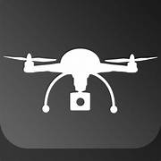

<!DOCTYPE html>
<html lang="en">

<head>
    <meta charset="UTF-8">
    <meta name="viewport" content="width=device-width, initial-scale=1.0">
    <title>Sim2Real-Swarm Drone Simulation Hackathon</title>
    <style>
        @import url('https://fonts.googleapis.com/css2?family=Orbitron:wght@400;700&display=swap');

        body {
            font-family: 'Orbitron', sans-serif;
            margin: 0;
            padding: 0;
            background-color: #f4f4f4;
            color: #1b263b;
            overflow-x: hidden;
        }

        header {
            background: linear-gradient(90deg, #ffc107, #ff6f00);
            padding: 30px;
            text-align: center;
            font-size: 32px;
            font-weight: bold;
            color: white;
            text-transform: uppercase;
            letter-spacing: 2px;
            box-shadow: 0px 4px 10px rgba(0, 0, 0, 0.2);
            animation: fadeIn 2s ease-in-out;
        }

        @keyframes fadeIn {
            from {
                opacity: 0;
            }

            to {
                opacity: 1;
            }
        }

        nav {
            background: #ff6f00;
            padding: 15px;
            text-align: center;
        }

        nav a {
            color: white;
            text-decoration: none;
            margin: 0 20px;
            font-size: 18px;
            font-weight: bold;
            transition: color 0.3s;
        }

        nav a:hover {
            color: #1b263b;
        }

        main {
            padding: 40px;
            max-width: 900px;
            margin: auto;
            animation: slideUp 1.5s ease-in-out;
        }

        @keyframes slideUp {
            from {
                transform: translateY(50px);
                opacity: 0;
            }

            to {
                transform: translateY(0);
                opacity: 1;
            }
        }

        h1,
        h2 {
            color: #ff6f00;
            border-bottom: 2px solid #ffc107;
            padding-bottom: 5px;
        }

        pre {
            background: #e0e0e0;
            padding: 15px;
            border-radius: 8px;
            overflow-x: auto;
            color: #1b263b;
            font-size: 14px;
            transition: transform 0.3s;
        }

        pre:hover {
            transform: scale(1.02);
        }

        .download-links {
            margin-top: 20px;
            padding: 15px;
            background: #ffcc80;
            text-align: center;
            border-radius: 5px;
            box-shadow: 0px 4px 10px rgba(0, 0, 0, 0.2);
        }

        .download-links a {
            color: #1b263b;
            text-decoration: none;
            font-weight: bold;
            transition: color 0.3s;
        }

        .download-links a:hover {
            color: #ff6f00;
        }

        footer {
            background: #1b263b;
            text-align: center;
            padding: 25px;
            margin-top: 40px;
            font-size: 14px;
            color: white;
        }

        /* Fullscreen preloader */
        /* Fullscreen preloader */
       /* Fullscreen preloader */
#preloader {
    position: fixed;
    width: 100%;
    height: 100vh;
    background: #0a0a0a;
    display: flex;
    justify-content: center;
    align-items: center;
    flex-direction: column;
    transition: opacity 1s ease-out;
    z-index: 9999;
    color: #00ffcc;
    font-family: Arial, sans-serif;
}

/* Container for the loader */
.loader-container {
    display: flex;
    flex-direction: column;
    align-items: center;
}

/* Drone hovering animation */
.drone-hover {
    font-size: 50px;
    animation: hover 2s ease-in-out infinite alternate;
}

/* Loading text animation */
.loading-text {
    font-size: 24px;
    margin: 10px 0;
    animation: fadeIn 2s infinite alternate;
}

/* Loading bar */
.loading-bar {
    width: 200px;
    height: 10px;
    background: rgba(255, 255, 255, 0.2);
    border-radius: 5px;
    overflow: hidden;
    margin-top: 10px;
}

.loading-progress {
    height: 100%;
    width: 0%;
    background: #00ffcc;
    animation: loading 2s linear infinite;
}

.sponsors {
            display: flex;
            justify-content: center;
            gap: 20px;
            margin-top: 20px;
        }
        .sponsor {
            border: 1px solid #ccc;
            padding: 10px;
            width: 150px;
            text-align: center;
        }
        .sponsor img {
            max-width: 100%;
            height: auto;
        }
        .preloader-sponsors {
    display: flex;
    justify-content: center; 
    align-items: center;
    gap: 40px;
    margin-top: 10px; 
}
.preloader-sponsors .sponsor {
    width: 120px; 
    padding: 5px; 
}
.sponsors {
    gap: 40px; 
}


@keyframes hover {
    from { transform: translateY(0px); }
    to { transform: translateY(-15px); }
}

@keyframes fadeIn {
    from { opacity: 0.3; }
    to { opacity: 1; }
}

@keyframes loading {
    0% { width: 0%; }
    100% { width: 100%; }
}


.hidden {
    opacity: 0;
    transition: opacity 1s ease-in-out;
}


#content {
    opacity: 1;
    padding: 20px;
    text-align: center;
}

    .sponsors {
        display: flex;
        justify-content: center;
        gap: 20px;
        margin-top: 20px;
    }

    .sponsor-logo {
        height: 50px; /* Adjust size as needed */
    }
    body.noscroll {
            overflow: hidden;
        }

        /* Overlay background */
        #overlay {
            position: fixed;
            top: 0;
            left: 0;
            width: 100%;
            height: 100%;
            background: rgba(0, 0, 0, 0.5);
            display: none;
            z-index: 999;
        }

        /* Popup container */
        #eventPopup {
            position: fixed;
            top: 50%;
            left: 50%;
            transform: translate(-50%, -50%);
            background: white;
            padding: 20px;
            box-shadow: 0 4px 8px rgba(0, 0, 0, 0.5);
            border-radius: 8px;
            z-index: 1000;
            width: 400px;
            max-height: 80vh;
            text-align: center;
            display: none;
            overflow-y: auto; /* Enables scrolling inside the popup */
        }

        /* Popup content styles */
        #eventPopup h2 {
            margin-top: 0;
        }

        #eventPopup p {
            margin: 10px 0;
        }

        #eventPopup a {
            color: #007BFF;
            text-decoration: none;
        }

        #eventPopup a:hover {
            text-decoration: underline;
        }

        /* Close button */
        #eventPopup button {
            margin-top: 10px;
            padding: 8px 16px;
            background: #007BFF;
            color: white;
            border: none;
            border-radius: 5px;
            cursor: pointer;
        }

        #eventPopup button:hover {
            background: #0056b3;
        }
        .Social_media{
            display: flexbox;
            gap: 50px;
            
        }
        .social{
            height: 5%;
            width: 15%;
            padding: 5%;
        }
    </style>
    <script>
        window.onload = function () {
            setTimeout(() => {
                document.getElementById("preloader").style.opacity = "0";
                document.getElementById("preloader").style.pointerEvents = "none";
                document.getElementById("content").classList.remove("hidden");
            }, 2000); // Adjust time as needed
            document.getElementById("eventPopup").style.display = "block";
            document.getElementById("overlay").style.display = "block";
            document.body.classList.add("noscroll");
        };

        function closePopup() {
            document.getElementById("eventPopup").style.display = "none";
            document.getElementById("overlay").style.display = "none";
            document.body.classList.remove("noscroll"); // Re-enable body scroll
        }
        function toggleMenu() {
            document.querySelector(".nav-links").classList.toggle("active");
        }

        function closeMenu() {
    document.querySelector(".nav-links").classList.remove("active");
}
    </script>

<body>
  <!-- Preloader -->
<div id="preloader">
    <div class="loader-container">
        <div class="drone-hover"></div>
        <h1 class="loading-text">Sim2Real by Robotech NITK</h1>
        <div class="loading-bar">
            <div class="loading-progress"></div>
        </div>
        <!-- Sponsors Section -->
        <div class="sponsors">
            <p>Sponsered By:</p>
            
            
        </div>
    </div>
</div>
    <header>SIM2REAL-Swarm Drone Simulation Hackathon</header>
    <div class="sponsors">
        <h2>Sponsered By:</h2><br>
        <div class="sponsor">
            
            <p>Niveus</p>
        </div>
        <div class="sponsor">
            
            <p>Quest</p>
        </div>
    </div>
    <div id="overlay"></div>

    <div id="eventPopup">
        <h2>Thank You for Showing Intrest</h2>
        <p><strong>Winners of Sim2Real 2025:<br></strong> 1. Team ROSLEELA <br> 2. Team Innovators <br> 3. Team Encrypt Nation</p>
        <p>Special thanks to our sponsors <br><br></p>
        <p><a href="gallery.html" target="_blank">View Event Gallery</a></p>
        <div class="Social_media">For future events stay tune to: <br> <a href="https://www.linkedin.com/company/robotech-nitk/?originalSubdomain=in"></a><a href="https://www.instagram.com/robotech_nitk/"></a></div>
        <button onclick="closePopup()">Close</button>
    </div>
    <header>Swarm Drone Simulation Hackathon</header>
    <div class="menu-icon" onclick="toggleMenu()">☰</div>
    <nav>
        <div class="nav-links">
        <a href="#problem" onclick="closeMenu()">Problem Statement</a>
        <a href="#intro" onclick="closeMenu()">Introduction</a>
        <a href="#stage1" onclick="closeMenu()">Stage 1</a>
        <a href="#stage2" onclick="closeMenu()">Stage 2</a>
        <a href="#stage3" onclick="closeMenu()">Stage 3</a>
        <a href="#stage4" onclick="closeMenu()">Stage 4</a>
        <a href="#stage5" onclick="closeMenu()">Stage 5</a>
        <a href="#submission" onclick="closeMenu()">Submission</a>
        <a href="#references" onclick="closeMenu()">References</a>
        <a href="https://forms.gle/Cs18rz8LHZ1mL4Ey8">Feedback</a></div>
    </nav>
    <main>
        <h2 id="problem">Problem Statement</h2>
        <p>Develop and implement an efficient multi-stage swarm control algorithm using Crazyflie drones in the
            Crazyswarm simulation framework.</p>
        <div class="download-links">
            <p><strong>Download Documents:</strong></p>
            <a href="rulebook .pdf" download>Download Rulebook</a> <br>
            <a href="problem_statement.pdf" download>Download Problem Statement</a><br>
            <h3>Quiz Links</h3>
            <a href="https://forms.gle/Lj2mQxBT7omBJSvL6">Warm Up Quiz</a><br>
            <a href="https://forms.gle/5p1BPhykGqwYxBREA">Scripting Quiz</a>
        </div>
            
        </div>
        <h2>1. Introduction</h2>
        <p>Welcome to the Swarm Drone Simulation Hackathon! In this competition, you will develop innovative
            applications to control a swarm of Crazyflie drones using the pycrazyswarm Python API and
            ROS in simulation mode only. Your solution will be built in five stages:
        <p>
        <ul>
            <li>Stage 1: Basic Flight (Single Drone): Initialize the simulation and execute a simple flight
                sequence (takeoff, hover, and land) for a single drone.
            <li>Stage 2: Trajectory Tracking (Single Drone): Command a single drone to follow a smooth
                trajectory between points.
            <li>Stage 3: Coordinated Flight (Multiple Drones): Synchronize multiple drones to take off,
                form a formation, and land.
            <li>Stage 4: Dynamic Trajectory Control: Implement dynamic re-planning by having a drone
                follow a moving target (e.g., a circular path).
            <li>Stage 5: Advanced Swarm Behavior with Collision Avoidance: Combine multi-drone co-ordination with
                collision avoidance in a dynamic formation.
        </ul>
        <p>
            All development is done in simulation mode. Remember to build your ROS workspace and</p>
        source it before running any scripts:
        <pre>
source ros_ws / devel / setup . bash
</pre>
        <h2 id="stage1">Stage 1: Basic Flight (Single Drone)</h2>
        <h3>2.1 Objective </h3>
        Initialize the simulation and perform a basic flight sequence: takeoff, hover, and land with a single
        Crazyflie.
        <h3>2.2 Boilerplate Code</h3>
        <pre>
#!/ usr/bin/env python
"""
Stage 1: Basic Flight Control for a Single Drone
This script initializes the Crazyswarm simulation and commands one drone to take
off ,
hover , and land .
"""
import time
from crazyswarm import Crazyswarm
def stage1_basic_flight () :
print (" Stage 1: Initializing simulation ...")
swarm = Crazyswarm ()
allcfs = swarm . allcfs
timeHelper = swarm . timeHelper
# Takeoff : Fly to 1.0 meter over 2 seconds
print (" Taking off ...")
allcfs . takeoff ( targetHeight =1.0 , duration =2.0)
timeHelper . sleep (4.0) # Wait for stabilization
# Hover for 5 seconds
print (" Hovering ...")
timeHelper . sleep (5.0)
# Land : Descend to 0.0 meters over 2 seconds
print (" Landing ...")
allcfs . land ( targetHeight =0.0 , duration =2.0)
timeHelper . sleep (3.0)
print (" Stage 1 complete : Basic flight sequence finished .")
if __name__ == " __main__ ":
stage1_basic_flight ()
        </pre>
        <h3>2.3 Detailed Explanation</h3>
        Environment Setup: </br>
        – Build your ROS workspace (typically in ros_ws) and source the setup file:
        <pre>source ros_ws / devel / setup . bash</pre>
        Run the script in simulation mode using the –sim flag:
        <pre>python stage1_basic_flight . py -- sim</pre>
        <li>Code Walkthrough:<ul>
                <li> The script initializes the simulation via the Crazyswarm class.
                <li> It retrieves the list of drones (allcfs) and a timing helper (timeHelper).
                <li> Commands are issued to take off (to 1.0 m), hover, and then land (to 0.0 m), with delays
                    ensuring each phase completes.
            </ul>
        </li>
        <li> Observation: In the simulation window, you should see the drone executing the flight sequence.
            <h2 id="stage2">Stage 2: Trajectory Tracking (Single Drone)</h2>
            <h3>3.1 Objective: </h3>
            Enhance Stage 1 by having the drone follow a smooth trajectory from its initial takeoff position to
            a specified goal position using the goTo command.
            <h3>3.2 Boilerplate Code</h3>
            <pre>
#!/ usr/bin/env python
"""
Stage 2: Single Drone Trajectory Tracking
This script commands a single drone to take off , move to a new position using a
smooth trajectory ,
and then land .
"""
import time
from crazyswarm import Crazyswarm
def stage2_trajectory_tracking () :
print (" Stage 2: Initializing simulation ...")
swarm = Crazyswarm ()
allcfs = swarm . allcfs
timeHelper = swarm . timeHelper
# Takeoff : Reach 1.0 meter altitude
print (" Taking off ...")
allcfs . takeoff ( targetHeight =1.0 , duration =2.0)
timeHelper . sleep (4.0)
# Trajectory : Move to a new position (e.g. , [1.0 , 1.0 , 1.0])
print (" Executing trajectory ( goTo )...")
goal_position = [1.0 , 1.0 , 1.0]
allcfs . goTo ( goal = goal_position , yaw =0.0 , duration =3.0)
timeHelper . sleep (4.0)
# Hover for 3 seconds at new position
print (" Hovering at new position ...")
timeHelper . sleep (3.0)
# Land
print (" Landing ...")
allcfs . land ( targetHeight =0.0 , duration =2.0)
timeHelper . sleep (3.0)
print (" Stage 2 complete : Trajectory tracking finished .")
if __name__ == " __main__ ":
stage2_trajectory_tracking ()        
</pre>
            <h3>3.3 Detailed Explanation</h3>
            <ul>
                <li>Takeoff: The drone is commanded to ascend to 1.0 meter in 2 seconds. A delay allows it to
                    stabilize.</li>
                <li>Trajectory Execution: The goTo command calculates a smooth trajectory from the current
                    position to [1.0, 1.0, 1.0].
                <li>Hovering and Landing: After reaching the target, the drone hovers briefly before landing.
                <li>Observation: The simulation window should display the drone taking off, following the trajecetory,
                    hovering, and landing.
            </ul>
            <h2 id="stage3">Stage 3: Coordinated Flight (Multiple Drones)</h2>
            <h3>4.1 Objective: </h3>
            Extend your solution to control multiple Crazyflies simultaneously. Use group commands to synchronize
            maneuvers such as takeoff, formation flight, and landing.<h3>4.2 Boilerplate Code</h3>
            <pre>
#!/ usr/bin/env python
"""
Stage 3: Coordinated Flight for Multiple Drones
This script commands multiple Crazyflies to take off , fly in a coordinated
formation , and land simultaneously .
"""
import time
from crazyswarm import Crazyswarm
def stage3_coordinated_flight () :
print (" Stage 3: Initializing simulation for multiple drones ...")
swarm = Crazyswarm ()
allcfs = swarm . allcfs
timeHelper = swarm . timeHelper
# Set all drones to the same group (e.g. , group mask = 1)
for cf in allcfs . crazyflies :
cf . setGroupMask (1)
# Synchronized Takeoff
print (" Coordinated takeoff ...")
allcfs . takeoff ( targetHeight =1.0 , duration =2.0)
timeHelper . sleep (4.0)
# Coordinated maneuver : Form a line formation
print (" Forming a line formation ...")
for cf in allcfs . crazyflies :
offset = [0.5 * cf .id , 0 , 0]
current_pos = cf . position ()
goal = [ current_pos [0] + offset [0] , current_pos [1] , current_pos [2]]
cf . goTo ( goal = goal , yaw =0.0 , duration =3.0 , relative = False , groupMask =1)
timeHelper . sleep (5.0)
# Synchronized Landing
print (" Coordinated landing ...")
allcfs . land ( targetHeight =0.0 , duration =2.0)
timeHelper . sleep (3.0)
print (" Stage 3 complete : Coordinated flight achieved .")
if __name__ == " __main__ ":
stage3_coordinated_flight ()        </pre>
            <h3>4.3 Detailed Explanation</h3>
            <ul>
                <li>Group Setup: Each drone is assigned a group mask (1) so that broadcast commands affect all
                    drones.
                <li>Synchronized Takeoff and Landing: The entire swarm takes off and lands simultaneously.
                <li>Coordinated Maneuver: The drones are commanded to form a line by moving to positions
                    offset by their IDs.
                <li>Observation: Verify in simulation that all drones take off, form the line, and land simultaneously
            </ul>
            <h2 id="stage4">Stage 4: Dynamic Trajectory Control</h2>
            <h3>5.1 Objective: </h3>
            Implement dynamic re-planning for a single drone by commanding it to follow a circular trajectory.
            The drone’s setpoints are continuously updated using cmdPosition to follow the circular path.</h3>
            <h3>5.2 Boilerplate Code</h3>
            <pre>
#!/ usr/bin/env python
"""
Stage 4: Dynamic Trajectory and Re - planning
This script demonstrates advanced control where a single drone follows a circular
trajectory
with continuous re - planning .
"""
import time
import numpy as np
from crazyswarm import Crazyswarm
def stage4_dynamic_trajectory () :
print (" Stage 4: Initializing simulation for dynamic trajectory ...")
swarm = Crazyswarm ()
allcfs = swarm . allcfs
timeHelper = swarm . timeHelper
# Use the first Crazyflie
cf = allcfs . crazyflies [0]
# Takeoff
print (" Taking off ...")
cf . takeoff ( targetHeight =1.0 , duration =2.0)
timeHelper . sleep (4.0)
# Dynamic trajectory : circular motion in the XY plane
print (" Executing dynamic circular trajectory ...")
center = np . array ([1.0 , 1.0])
radius = 0.5
duration = 10.0
steps = 50
dt = duration / steps
6
for i in range ( steps ) :
theta = 2 * np . pi * i / steps
pos_x = center [0] + radius * np . cos ( theta )
pos_y = center [1] + radius * np . sin ( theta )
pos = [ pos_x , pos_y , 1.0]
cf . cmdPosition ( pos , yaw =0.0)
timeHelper . sleep ( dt )
# Hover and then land
print (" Hovering ...")
timeHelper . sleep (2.0)
print (" Landing ...")
cf . land ( targetHeight =0.0 , duration =2.0)
timeHelper . sleep (3.0)
print (" Stage 4 complete : Dynamic trajectory executed .")
if __name__ == " __main__ ":
stage4_dynamic_trajectory ()       
</pre>
            <h3>5.3 Detailed Explanation</h3>
            <ul>
                <li> Takeoff: The drone ascends to 1.0 meter and stabilizes.
                <li>Circular Trajectory: A loop computes a circular path using numpy. The drone’s position is
                    updated continuously using cmdPosition to follow the circle.
                <li>Hover and Land: After completing the circle, the drone hovers briefly before landing.
                <li>Observation: In simulation, the drone should follow a smooth circular trajectory.
            </ul>


            <h2 id="stage5">Stage 5:Advanced Swarm Behavior with Collision Avoidance.</h2>
            <h3>6.1 Objective: </h3>
            Develop an advanced control scenario where multiple drones perform coordinated flight while dynamically
            adjusting their trajectories to avoid collisions. This is achieved by computing avoidance offsets for each
            drone based on its neighbors and continuously updating setpoints using
            cmdPosition.</h3>
            <h3>6.2 Boilerplate Code</h3>
            <pre>
#!/ usr/bin/env python
"""
Stage 5: Advanced Swarm Behavior with Collision Avoidance
This script demonstrates advanced behavior where multiple Crazyflies execute a
coordinated maneuver
and dynamically adjust trajectories to avoid simulated collisions .
"""
import time
import numpy as np
from crazyswarm import Crazyswarm
7
def compute_avoidance_offset ( current_pos , desired_pos , other_positions ,
min_distance =0.3) :
"""
Computes a simple repulsive offset to maintain a minimum distance from other
drones .
For each drone closer than min_distance , a repulsive force is applied
proportional to the difference .
"""
avoidance = np . array ([0.0 , 0.0 , 0.0])
for pos in other_positions :
vec = np . array ( desired_pos ) - np . array ( pos )
distance = np . linalg . norm ( vec )
if distance < min_distance and distance > 0:
avoidance += ( vec / distance ) * ( min_distance - distance )
return avoidance
def stage5_advanced_swarm () :
print (" Stage 5: Initializing simulation for advanced swarm behavior ...")
swarm = Crazyswarm ()
allcfs = swarm . allcfs
timeHelper = swarm . timeHelper
# Set group mask for coordinated control
for cf in allcfs . crazyflies :
cf . setGroupMask (1)
# Synchronized takeoff : All drones ascend to 1.0 meter .
print (" Coordinated takeoff for swarm ...")
allcfs . takeoff ( targetHeight =1.0 , duration =2.0)
timeHelper . sleep (4.0)
# Define target formation ( example formation )
target_formation = [
[1.0 , 1.0 , 1.0] ,
[1.2 , 1.0 , 1.0] ,
[1.0 , 1.2 , 1.0] ,
[0.8 , 1.0 , 1.0] ,
[1.0 , 0.8 , 1.0]
]
steps = 30
dt = 0.5
# Dynamic formation and collision avoidance loop
for step in range ( steps ) :
for i , cf in enumerate ( allcfs . crazyflies ) :
target = target_formation [ i % len ( target_formation ) ]
current_pos = np . array ( cf . position () )
desired = np . array ( target )
error = desired - current_pos
other_positions = [ np . array ( other_cf . position () ) for j , other_cf in
enumerate ( allcfs . crazyflies ) if j != i ]
avoidance = compute_avoidance_offset ( current_pos , target ,
other_positions )
new_setpoint = current_pos + 0.1 * error + avoidance
cf . cmdPosition ( new_setpoint . tolist () , yaw =0.0)
timeHelper . sleep ( dt )
# Hover in formation for 2 seconds
print (" Hovering in formation ...")
8
timeHelper . sleep (2.0)
# Synchronized landing : All drones descend to 0.0 meters .
print (" Coordinated landing ...")
allcfs . land ( targetHeight =0.0 , duration =2.0)
timeHelper . sleep (3.0)
print (" Stage 5 complete : Advanced swarm behavior executed .")
if __name__ == " __main__ ":
stage5_advanced_swarm ()</pre>
            <h3>6.3 Detailed Explanation</h3>
            <ul>
                <li> Takeoff: The drone ascends to 1.0 meter and stabilizes.
                <li>Group Coordination: All drones are assigned a group mask (1) to ensure they receive synchronized
                    takeoff and landing commands.
                <li> Synchronized Takeoff: The swarm takes off simultaneously to 1.0 meter.
                <li>
                    <ul> Dynamic Re-planning Loop: For each time step:
                        <li>Each drone calculates its error relative to a predefined target formation.
                        <li> A collision avoidance offset is computed based on the positions of neighboring drones.
                        <li>These factors are combined to update the drone’s setpoint using cmdPosition, ensuring
                            smooth and safe re-planning.
                    </ul>
                <li> Synchronized Landing: The swarm lands in unison after the maneuver.
                <li> Observation: The simulation should display all drones taking off, dynamically adjusting their
                    positions to form the target formation while avoiding collisions, and landing simultaneously
            </ul>


            <h2 id="submission">Submission Guidelines</h2>
            <ul>
                <li>A public Git repository with source code.</li>
                <li>A README with setup instructions and execution steps.</li>
                <li>A 5-minute video demonstrating the simulation results.</li>
                <a href="https://forms.gle/xTUFaks2P62oeuEs9">Submit here</a>
            </ul>
            <h2 id="references">References</h2>
            <ul>
                <li><a href="https://crazyswarm.readthedocs.io/">Crazyswarm Documentation</a></li>
                <li><a href="https://crazyswarm.readthedocs.io/en/latest/api.html">Python API Reference</a></li>
                <li><a href="https://www.bitcraze.io/documentation/">Crazyflie Firmware and CRTP Protocol</a></li>
            </ul>
    </main>
    <footer>
        &copy; 2025 Swarm Drone Hackathon | Powered by ROBOTECHNITK-INCIDENT 2025 <br>This site is best viewed in a Desktop version.
    </footer>
</body>

</html>
